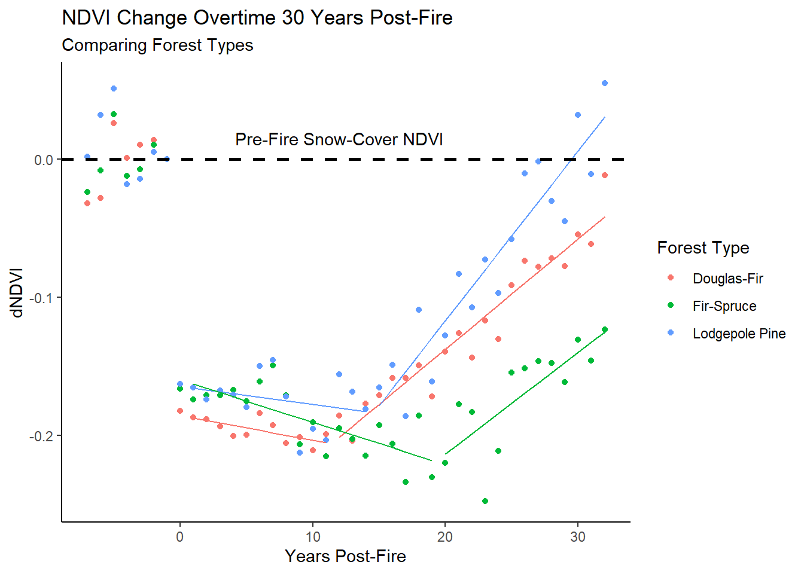

Part 11 NDVI Trajectory
11.1 Set Up
11.1.1 Libraries
library(ggplot2)
library(ggthemes)
library(tidyverse)
library(sf)
library(terra)
library(raster)
library(exactextractr)
library(forcats)
library(broom)
library(knitr)
library(sjPlot)
library(lwgeom)
library(lme4)
library(nlme)
library(segmented)
library(rempsyc)11.1.2 Import Fires
# import high-severity patches
patches <- st_read("data/patches/highsev_patches.shp") %>%
st_transform(crs="EPSG: 4326") %>%
mutate(perim = st_cast(geometry,"MULTILINESTRING") %>% st_length(),
perim_ratio = perim/ptch_r_)
# set crs
crs <- crs(patches)
# import fire boundaries
fires_export <- st_read("data/fire_boundaries/fires_export.shp")%>%
st_transform(., crs=crs)
# import mask of plantings and fires
mask <- st_read("data/patches/points_dataset_MASK.shp") %>%
st_transform(crs=crs) %>%
st_join(.,fires_export)
# final fire list
fire_names <- c("Fire_54_1991","Fire_1_1988","Fire_2_1988","Fire_3_1988","Fire_4_1988","Fire_7_1988","Fire_9_1988","Fire_10_1988","Fire_11_1988","Fire_12_1988","Fire_13_1988","Fire_14_1988","Fire_15_1988","Fire_16_1988","Fire_18_1988","Fire_19_1988","Fire_20_1988","Fire_22_1988","Fire_23_1988","Fire_25_1988","Fire_26_1988","Fire_28_1988","Fire_29_1988","Fire_31_1988","Fire_32_1989","Fire_33_1989","Fire_35_1989","Fire_38_1989","Fire_41_1989","Fire_42_1989","Fire_48_1990","Fire_49_1991","Fire_50_1991","Fire_51_1991")11.1.3 Prepare Data for Bands and Fire Names
11.1.3.1 Bands
# list band names and years
bands <- c("blue", "green", "red", "nir", "swir1", "swir2", "ndvi", "ndwi", "nbr", "nbr2", "ndsi", "ndfsi", "evi")
years <- c(1984:2020)
# create list of all combinations of bands, in the appropriate order
bandnames <- expand_grid(years,bands) %>%
mutate(V1 = str_c(bands,years))
bandlist <- bandnames$V111.2 Connect Landsat and High-Severity Patches
11.2.1 Extract Landsat Data for Each Patch
extract_landsat <- function(fire_name){
print(paste0("Starting Fire ",fire_name))
# get list of this fire's tif files
rast_list <- list.files(path = "data/landsat/landsat_annual", pattern = str_c(fire_name,".tif"), all.files=TRUE, full.names=TRUE)
rast_fire <- rast(rast_list)
# name the bands
names(rast_fire) <- bandlist
# verify crs
crs(rast_fire) <- "EPSG: 4326"
# filter the patches for this fire
fire_patches <- patches %>%
filter(Fire_ID==fire_name) %>%
st_transform(crs=crs(rast_fire))
fire_mask <- mask %>%
filter(Fire_ID == fire_name)
rast_fire <- mask(rast_fire,fire_mask,inverse=TRUE)
# get the mean landsat values for each patch in this fire
extracted_data <- left_join(fire_patches, exact_extract(rast_fire,fire_patches, append_cols = TRUE, max_cells_in_memory = 3e+08, fun = "mean")) %>%
st_drop_geometry()
# export
# return(extracted_data)
write_csv(extracted_data,str_c("data/ndvi_trajectory/",fire_name,".csv"))
}# map extraction function across all fires
extracted_fires <- map(fire_names,extract_landsat)# combine landsat dataset
landsat_dataset<- lapply(list.files(path = "data/ndvi_trajectory", pattern = str_c("Fire"), all.files=TRUE, full.names=TRUE),read_csv) %>%
do.call(rbind,.) 11.3 Prepare Dataset
11.3.1 Clean Data
# clean dataset, label, select only ndvi, calculate pre-fire ndvi & differenced ndvi
ndvi_dataset_full <- landsat_dataset %>%
mutate(Patch_ID = str_c(Fire_ID,"-",1:n()),
prefire_yr = as.integer(year-1),
patch_area_class = fct_relevel(as.factor(case_when(ptch_r_ >= 1000 ~ ">1000 acres",
ptch_r_ < 1000 & ptch_r_ >= 500 ~ "500-1000 acres",
ptch_r_ < 500 & ptch_r_ >= 100 ~ "100-500 acres",
ptch_r_ < 100 & ptch_r_ >= 50 ~ "50-100 acres",
ptch_r_ < 50 & ptch_r_ >= 10 ~ "10-50 acres",
TRUE ~ "<10 acres")),
c("<10 acres","10-50 acres","50-100 acres","100-500 acres","500-1000 acres",">1000 acres"))) %>%
dplyr::select(Evnt_ID, Incd_Nm, Fire_ID, Patch_ID, prefire_yr, year,
ecoregn, ptch_fr, ptch_r_, patch_area_class, contains("ndvi")) %>%
pivot_longer(.,contains("ndvi"),names_to = "landsat_yr", values_to = "ndvi")%>%
mutate(landsat_yr = as.integer(landsat_yr %>% stringr::str_remove("mean.ndvi")),
years_postfire = landsat_yr - year) %>%
mutate(prefire_ndvi = case_when(years_postfire == -1 ~ ndvi)) %>%
group_by(Patch_ID) %>%
mutate(prefire_ndvi = mean(prefire_ndvi, na.rm=TRUE)) %>%
ungroup() %>%
mutate(delta_ndvi = ndvi - prefire_ndvi)%>%
filter(ptch_fr %in% c("Lodegepole Pine","Douglas-Fir","Fir-Spruce"),
Fire_ID %in% fire_names) %>%
mutate(ptch_fr = case_when(ptch_fr == "Lodegepole Pine" ~ "Lodgepole Pine",
TRUE ~ ptch_fr))%>%
drop_na() 11.4 Modeling
11.4.1 Forest Type Groups
11.4.1.1 Model
# group ndvi values by forest type and years post-fire
ndvi_grouped_type <- ndvi_dataset_full %>%
group_by(ptch_fr,years_postfire) %>%
summarize(ndvi=mean(ndvi,na.rm=TRUE),
delta_ndvi = mean(delta_ndvi,na.rm=TRUE)) %>%
drop_na()
# prepare datasets for each forest type
data_df <- ndvi_grouped_type%>% filter(ptch_fr == "Douglas-Fir",years_postfire>=0)
data_lp <- ndvi_grouped_type%>% filter(ptch_fr == "Lodgepole Pine",years_postfire>=0)
data_fs<- ndvi_grouped_type%>% filter(ptch_fr == "Fir-Spruce",years_postfire>=0)
# model dNDVI for each forest type through time
lm_ndvi_df <- lm(delta_ndvi ~ years_postfire, data = data_df%>% filter(years_postfire>=0))
seg_ndvi_df <- segmented(lm_ndvi_df,seg.Z = ~ years_postfire,npsi =1)
data_df$fit <- seg_ndvi_df$fitted.values
lm_ndvi_lp <- lm(delta_ndvi ~ years_postfire, data = data_lp)
seg_ndvi_lp <- segmented(lm_ndvi_lp,seg.Z = ~ years_postfire,npsi =1)
data_lp$fit <- seg_ndvi_lp$fitted.values
lm_ndvi_fs <- lm(delta_ndvi ~ years_postfire, data = data_fs )
seg_ndvi_fs <- segmented(lm_ndvi_fs,seg.Z = ~ years_postfire,npsi =1)
data_fs$fit <- seg_ndvi_fs$fitted.values11.4.1.2 Estimates
estimate_yrs_recovery <- function(model){
bp <- as.numeric(model$indexU)
slopes <- slope(model) %>% as.data.frame()
slope1 <- slopes$years_postfire.Est.[1]
slope2 <- slopes$years_postfire.Est.[2]
intercept <- model$coefficients[1]
new_intercept <- intercept + slope1 * bp
est_rec <- -new_intercept/slope2 + bp
r2 <- summary(model)$adj.r.squared
df <- data.frame(forest_type = NA,
intercept = intercept,
slope_pre = slope1,
slope_post = slope2,
years_detect = bp,
years_recover = est_rec,
adj_R2 = r2)
return(df)
}
seg_models <- rbind(estimate_yrs_recovery(seg_ndvi_df),
estimate_yrs_recovery(seg_ndvi_lp),
estimate_yrs_recovery(seg_ndvi_fs)) %>%
mutate(forest_type = c("Douglas-Fir","Lodgepole Pine","Fir-Spruce"))
rownames(seg_models) <- NULL# function to format table to correct digits
fun <- function(x) {formatC(x, format = "f", digits = 4)}
# table of NDVI model estimaates
nice_table(seg_models, separate.header = TRUE, col.format.custom = 1:4,format.custom = "fun",width =1)forest_type | intercept | slope_pre | slope_post | years_detect | years_recover | adj_R2 |
|---|---|---|---|---|---|---|
Douglas-Fir | -0.1929 | -0.0013 | 0.0082 | 11.45 | 36.90 | 0.96 |
Lodgepole Pine | -0.1642 | -0.0014 | 0.0123 | 14.64 | 29.56 | 0.90 |
Fir-Spruce | -0.1618 | -0.0032 | 0.0076 | 19.38 | 48.72 | 0.58 |
11.4.1.3 Plot
ndvi_grouped_type <- ndvi_grouped_type %>%
mutate(ptch_fr= case_when(ptch_fr == "Lodegepole Pine" ~ "Lodgepole Pine",
TRUE~ ptch_fr))
ggplot()+
geom_point(data = ndvi_grouped_type, aes(x= years_postfire,y = delta_ndvi,color = ptch_fr)) +
geom_line(data= data_df,aes(x=years_postfire,y=fit),color = "#F8766D") +
geom_line(data= data_lp,aes(x=years_postfire,y=fit),color = "#619CFF") +
geom_line(data= data_fs,aes(x=years_postfire,y=fit),color = "#00BA38") +
labs(x="Years Post-Fire",y="dNDVI",color = "Forest Type",title= "NDVI Change Over Time 30 Years Post-Fire") +
geom_hline(yintercept= 0,linetype="dashed",color="black",linewidth=1)+
annotate("text", x=12, y=0.015, label="Pre-Fire Snow-Cover NDVI")+
theme_bw()+
scale_x_continuous(breaks=seq(-5,30,5))+
scale_y_continuous(breaks=seq(-1,1,.05))